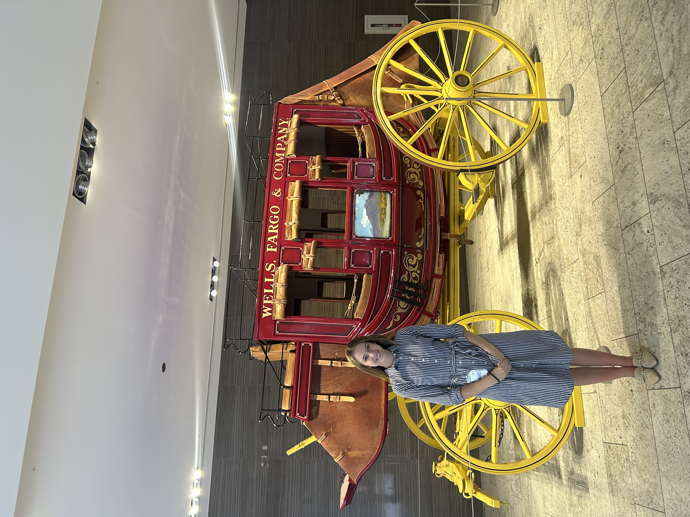

Welcome
Howdy, my name is Ava Valdes. I am a senior double majoring in sociology and economics with minors in honors and business. I am so excited you have navigated to my page!
Summer '25
This past summer I packed my life into a suitcase and moved to Phoenix, Arizona to intern for Wells Fargo bank in their Chief Operating Office -- specifically in Account Takeover and Online Fraud Detection. This internship was far from what I expected, but I really enjoyed the diversity of work ebing completed by fraud specialists. Days were similar and consistent, but the content being analyzed, quantified, and doumented varied greatly. I witnessed everything from identity theft, to claims abuse, to elder abuse. In the mean time, I have accepted a return offer at the bank for the coming summer, and I am very eager for the opportunity to learn and grow more in a professional setting.
The opportunities that this internship provided expanded far beyond the 10 weeks in office. I networked with senior professionals, attended real-time fraud prevention issue management meetings, and worked on projects with other interns.
